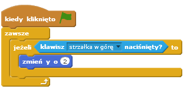

Wstęp
W ramach tego projektu nauczysz się jak stworzyć grę przygodową z otwartym światem.
Krok 1: Programowanie gracza
Zadania do wykonania
Otwórz projekt Scratch o nazwie 'Otwarty świat'. Możesz go znaleźć na stronie jumpto.cc/world-go albo pobrać go na swój komputer ze strony jumpto.cc/world-get.

Gracz będzie sterował swoją postacią za pomocą strzałek. Kiedy gracz wciśnie strzałkę do góry, chcemy, żeby postać poruszyła się do góry. Żeby to osiągnąć, trzeba zmienić współrzędną y postaci. Dodaj poniższy kod do duszka
gracz:
Aby przetestować postać, kliknij zieloną flagę i przytrzymaj strzałkę w górę. Czy postać porusza się do góry?

Aby grasz mógł poruszać się w lewo, należy dodać kolejny blok
jeżelito duszka gracza, który będzie zmieniał współrzędną x:
Wyzwanie: Poruszanie się we wszystkie cztery strony
Czy potrafisz dodać kod do duszka gracza, który sprawi, że będzie mógł poruszać się w górę, w dół, w lewo i w prawo? Spróbuj użyć kodu, który już masz!
Zapisz swój projekt
Ponownie przetestuj swoją postać. Zauważ, że może ona przechodzić przez szare ściany.

Aby to naprawić, postać powinna się poruszać, ale cofać się, kiedy dotyka szarej ściany. Poniżej znajdziesz przydatny kod:
Zauważ, że nowy blok
jeżelidotyka koloruznajduje się wewnątrz blokujeżeliklawisz [strzałka w górę]Przetestuj nowy kod. Przesuń się pod ścianę - nie powinieneś móc w nią wejść.

Zróbmy to samo dla strzałki w lewo, cofajmy gracza, jeżeli dotyka ściany. Kod gracza powinien wyglądać mniej więcej tak:
Wyzwanie: Naprawa ruchu gracza
Dodaj kod do duszka gracza tak, aby nie mógł przechodzić przez ściany z żadnej strony. Użyj kodu, który już masz!
Zapisz swój projekt
Krok 2: Programowanie świata
Pozwólmy graczowy przechodzić przez drzwi do innych pomieszczeń!
Zadania do wykonania
Plik projektu zawiera gotowe tła z dodatkowymi pomieszczeniami:
Będziesz potrzebować nowej zmiennej 'dla wszystkich duszków'. Nazwij ją
pokój. Będzie ona wskazywać, gdzie obecnie znajduje się gracz.Kiedy gracz dotknie pomarańczowych drzwi w pierwszym pokoju, tło powinno zmienić się na następne, a gracz powinien ponownie przemieścić się na lewą stronę sceny. Poniżej znajdziesz potrzebny kod - umieść go wewnątrz pętli
zawszegracza:Dodaj poniższy kod na początku kodu gracza (przed pętlą
zawsze). Dzięki temu za każdym razem, kiedy wciśniemy zieloną flagę, wszystko wróci do stanu początkowego:Kliknij flagę i przejdź graczem przez pomarańczowe drzwi. Czy gracz przeniósł się na następny ekran? Czy zmienna
pokójzmieniła się na 2?
Wyzwanie: Powrót do poprzedniego pokoju
Czy potrafisz sprawić, żeby gracz cofał się do poprzedniego pokoju, kiedy trafi na żółte drzwi? Pamiętaj, że ten kod będzie bardzo podobny do kodu, który już masz (odpowiada za przenoszenie się do następnego pokoju).
Zapisz swój projekt
Krok 3: Znaki
Dodajmy znaki do twojego świata, aby pomagały graczowi w jego wędrówce.
Zadania do wykonania
Projekt zawiera już duszka znaku powitalnego:
Ten znak powinien być widoczny tylko w pokoju 1. Dodajmy zatem do niego kod, który sprawi, że tak będzie:
Przetestuj znak, przechodząc między pokojami. Znak powinien być widoczny tylko w pierwszym pokoju.
Znak jest na nic, jeżeli nic nie mówi! Dodaj trochę kodu (w oddzielnym bloku), wyświetlającego wiadomość, kiedy gracz dotknie znaku:
Przetestuj znak. Powinieneś zobaczyć wiadomość, kiedy gracz dotknie znaku:

Zapisz swój projekt
Wyzwanie: Skarb!
Kliknij prawym przyciskiem myszy na duszka skrzyni i wybierz 'pokaż'.
Czy potrafisz sprawić, żeby skrznia ze skarbem pojawiała się tylko w pokoju 3 i mówiła "Dobra robota!", kiedy gracz jej dotknie?
Zapisz swój projekt
Krok 4: Ludzie
Dodajmy innych ludzi do twojego świata, z którymi gracz mógłby rozmawiać.
Zadania do wykonania
Dodaj ten kod do duszka osoby, tak, aby mogła ona rozmawiać z graczem. Ten kod jest bardzo podobny do tego, który dodałeś do znaku:
Możesz także sprawić, żeby ta osoba poruszała się, używając tych dwóch bloków:
Twoja osoba będzie zachowywać się inaczej, w zależności od tego, czy umieścisz ten kod wewnątrz pętli
zawszeczy węwnątrz blokujeżeli. Spróbuj obu opcji i wybierz tę, która bardziej ci pasuje.Czy zauważyłeś, że osoba odwraca się do góry nogami? Aby temu zaradzić, kliknij w ikonę informacji o duszku (
i) i kliknij w kropkę, aby zmienić styl obrotów.
Wyzwanie: Ulepszenie osoby
Czy potrafisz dodać kod do twojej osoby, który sprawi, że będzie się ona pojawiać tylko w pokoju 1? Pamiętaj, aby przetestować swój nowy kod!
Zapisz swój projekt
Możesz także dodać patrolujących przeciwników, którzy zakończą grę, jeżeli gracz ich dotknie. Dodaj nowego duszka przeciwnika i zmień mu styl obrotów, tak jak to było pokazane przy duszku osoby.
Dodaj kod do twojego przeciwnika tak, żeby pojawiał się tylko w pokoju 2.
Będziesz musiał także dodać kod żeby przeciwnik się poruszał i kończył grę w momencie spotkania z graczem. Łatwiej jest to zrobić w oddzielnych blokach kodu. Kod twojego przeciwnika powinien wyglądać mniej więcej tak
Przetestuj swojego przeciwnika. Upewnij się, że
- Przeciwnik jest widoczny tylko w pokoju 2;
- Patroluje pokój;
- Gra się kończy, jeżeli gracz go dotyka.
Zapisz swój projekt
Wyzwanie: Więcej przeciwników
Czy potrafisz stworzyć kolejnego przeciwnika w pokoju 3, który patroluje teren z góry na dół przez dziurę w murze?

Zapisz swój projekt
Krok 5: Zbieranie monet
Zadania do wykonania
Dodaj do projektu nową zmienna o nazwie
monety.Kliknij prawym przyciskiem myszy na duszka monety i wybierz 'pokaż'.
Dodaj kod do monety tak, aby pojawiała się tylko w pokoju 1.
Dodaj kod do monety tak, aby zmienna
monetyzmieniała się o 1 kiedy moneta zostanie podniesiona:Kod
zatrzymaj inne skrypty duszkajest potrzebny do tego, żeby moneta nie była pokazywana w pokoju 1 po tym, jak zostanie podniesiona.Będziesz także potrzebował kodu, który ustawia wartość zmiennej
monetyna 0 na początku gry.Przetestuj swój projekt - zbieranie monet powinno zwiększać wynik o 1.
Wyzwanie: Więcej monet
Czy potrafisz dodać więcej monet do twojej gry? Mogą być w różnych pokojach, kilka może być nawet strzeżonych przez patrolujących przeciwników.
Krok 6: Drzwi i klucze
Zadania do wykonania
Zmień kostium duszka klucza tak, aby był niebieski. Kliknij prawym przyciskiem myszy na tego duszka i wybierz 'pokaż', żeby pojawił się na scenie. Zmień tło sceny na pokój 3 i umieść klucz w trudno dostępnym miejscu!

Upewnij się, że klucz jest widoczny tylko w pokoju 3.
Stwórz nową listę i nazwij ją
ekwipunek. Tutaj będziemy trzymać wszystkie przedmioty, które znajdzie gracz.Kod odpowiadający za zbieranie klucza jest bardzo podobny do tego użytego przy zbieraniu monet. Jedyną różnicą jest to, że klucz dodajemy do ekwipunku.
Przetestuj swój klucz żeby upewnić się, że możesz go zebrać i że pojawia się w ekwipunku. Pamiętaj, żeby dodać też kod do twojej sceny, który będzie opróżniał ekwpiunek na starcie gry.
Umieść niebieskie drzwi w przerwie między dwoma ścianami.

Dodaj kod do drzwi tak, aby były one widoczne tylko w pokoju 3.
Niebieskie drzwi powinny się ukrywać w momencie, kiedy gracz zbierze niebieski klucz.
Przetestuj swój projekt i sprawdź, czy po zebraniu niebieskiego klucza niebieskie drzwi znikają.
Zapisz swój projekt
Wyzwanie: Stwórz własny świat
Teraz jesteś gotowy, żeby stworzyć swój własny świat. Poniżej znajdziesz kilka pomysłów:
Zmień klimat gry i jej grafikę;
Dodaj dźwięki i muzykę do gry;
Dodaj więcej ludzi, przeciwników, znaków i monet;
Dodaj czerwone i żółte drzwi, które będą potrzebować swoich własnych kluczy do otwarcia;
Dodaj więcej pokojów;
Dodaj inne przydatne przedmioty;
Użyj monet, aby otrzymać informacje od innych osób;
Możesz nawet dodać drzwi na północ i południe tak, aby gracz mógł zmieniać pokoje we wszystkich 4 kierunkach. Np. jeśli masz 9 pokojów, możesz je przedstawić jako plansza 3x3. Po dodaniu 3 do numeru pokoju, gracz znajdzie się w pokoju poniżej.